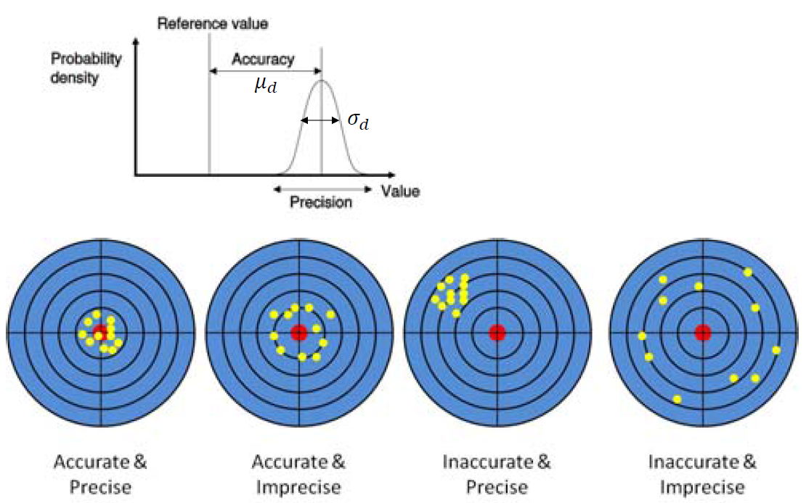
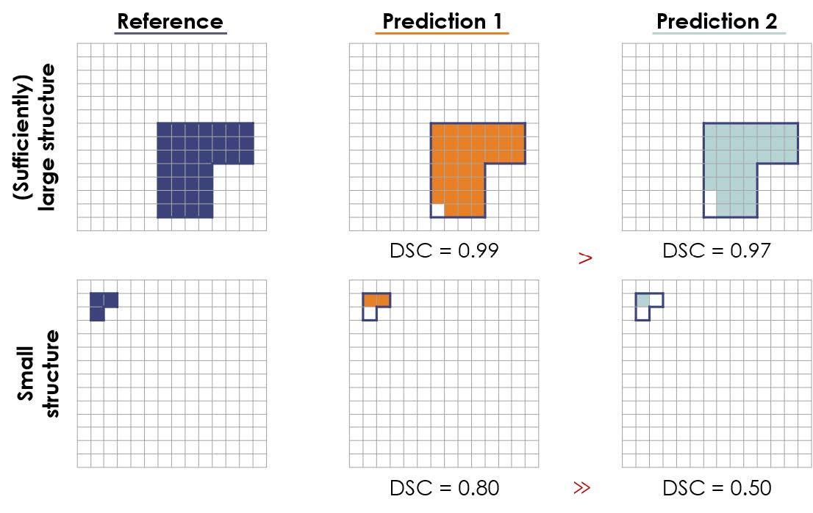
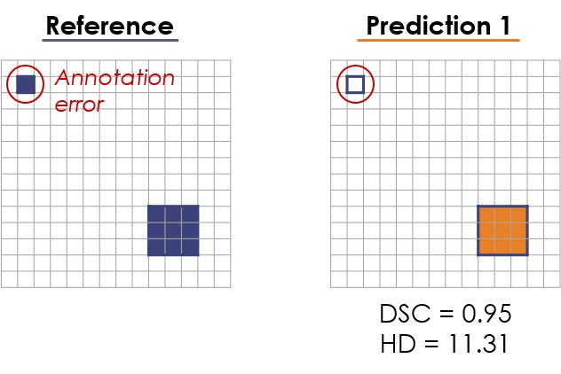
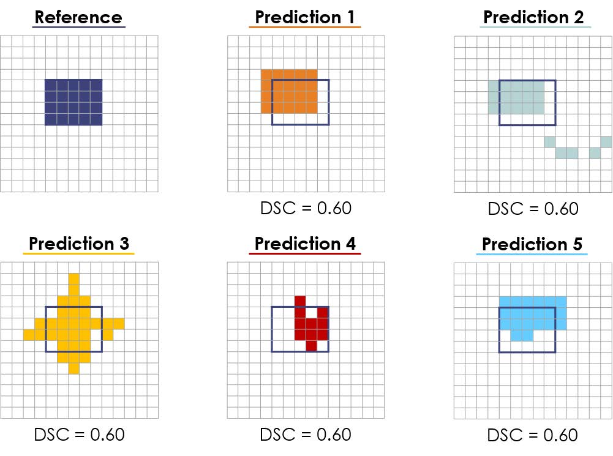
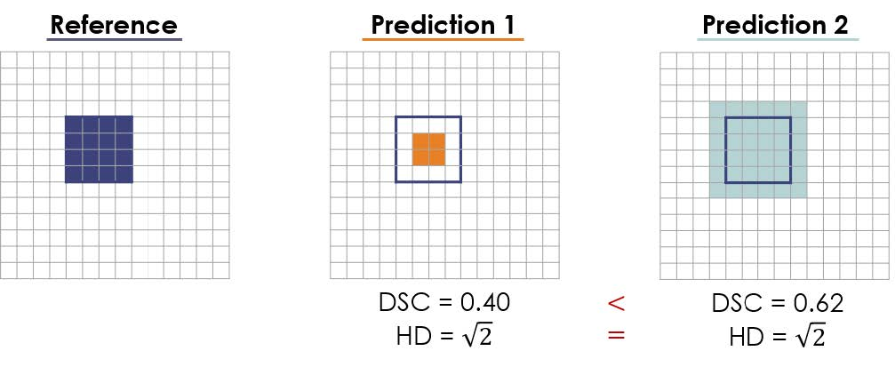
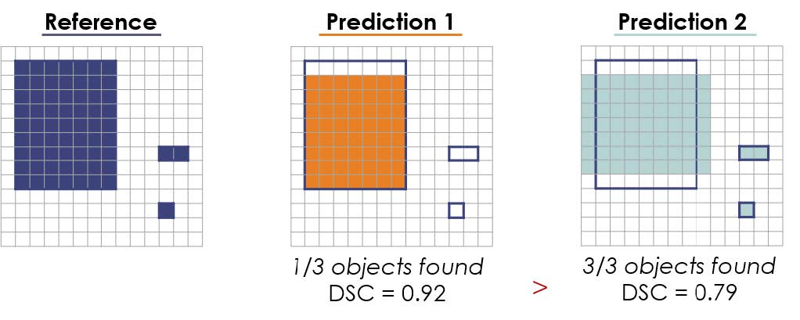

Topic 2.2: Validation in medical image analysis (Segmentation)
This notebook combines theory with questions to support the understanding of validation metrics in medical image analysis. Use available markdown sections to fill in your answers to questions as you proceed through the notebook.
Contents:
Validation (concepts)
1.1 Quality characteristics
Accuracy (bias)
Precision (variation), reproducibility, reliability, replicability
Fault detection
1.3 Measures of quality
Segmentation - quality measures
Common limitations of performance metrics in biomedical image analysis
Small structures
Image artifacts
Overlap measurements
Over- and undersegmentation
Single-object bias
Metric combination
Choosing the right metric for a given task
References:
[1] Measures of quality: Toennies Klaus, D. Guide to Medical Image Analysis - Methods and Algorithms, Chapter 13.1
[2] Ground truth: Toennies Klaus, D. Guide to Medical Image Analysis - Methods and Algorithms, Chapter 13.2
[3] Limitations of performance metrics: Reinke et al. Common Limitations of Image Processing Metrics: A Picture Story.
[4] Assessment of registration errors: Fitzpatrick, M. Visualization, Image-Guided Procedures and Modeling, 7261:1–12, SPIE Medical Imaging (2009).
[1]:
%load_ext autoreload
%autoreload 2

1. Validation (concepts)
Validation of medical image analysis methods is the estimation of correctness of certain results from tests of a method on a representative sample set. In e.g. software design, validation is the evaluation of the degree to which user needs (performance requirements) are met, i.e. whether the right software is being built. In medical image analysis, we usually talk about technical validation, where the aim is to evaluate the performance of computing algorithms with respect to e.g. segmentation accuracy. Validation is used in various image computing classes (registration, segmentation, detection, classification, quantification).
Prior to performing validation, suitable data needs to be selected, comparison measures need to be chosen, and a norm (e.g. ground-truth, explained below) needs to be defined. Remember that every validation study must have a hypothesis on performance (e.g. outcome is better than…), and a ground truth (gold standard) is essential. Validation can provide information about our method with respect to another method used to generate the same results (cross-validation). It is mandatory to document a detailed description of the validation procedure together with a well-founded justification of selected measures, as it allows potential new users of the method to investigate the validity of the arguments used to build the validation scenario.
1.1 Quality characteristics
There are a number of quality characteristics used in validation of medical image analysis methods:
Accuracy (bias)
Accuracy determines the deviation of results from known ground truth. It is computed via a measure of quality (section 1.3) comparing results with some norm. Accuracy is calculated as the ratio between true/false positives and negatives: \(\mathrm{A} = \frac{(\mathrm{TP + TN})}{(\mathrm{TP+FP+FN+TN})}\).
Precision (variation), reproducibility, reliability, replicability
These characteristics measure the extent to which equal or similar input produces equal or similar results. Reliable methods produce output within a given range of variation (e.g. in terms appearance). A method is reproducible, if two runs of this method with the exact same input and setup produce the exact same results. Replicability of a method can be determined if two runs of a method with the same input and same setup arrive at similar conclusions.

Robustness
Robustness of a method characterizes the change of the quality of an analysis result if conditions deviate from assumptions made for analysis (e.g., when noise level increases or if object appearance deviates from prior assumptions). For example, robustness of a segmentation algorithm is the ability of an algorithm to persist in sufficient performance despite abnormalities in the input images (e.g. due to patient motion). Reproducibility and robustness are also important performance indicators in case of varying image data (different scanners, hospitals, patient populations, etc.).
Efficiency
The effort which must be exerted to achieve an analysis result is described by efficiency. You may recall that there are semi-automated methods that require some degree of human interaction or expert knowledge. These factors contribute to the overall determination of a method’s efficiency.
Fault detection
The ability to discover possible faults while an analysis method is being applied is called fault detection. It is a very useful feature, because it requires the method to test for reliability of its own results.
1.3 Measures of quality
Quality is determined by the kind of analysis which has been conducted on a dataset:
Task |
Quality measure |
|---|---|
Segmentation |
Correspondence between the segmented object and a reference segmentation |
Registration |
Deviation from the correct registration transformation |
Computer-aided detection (CAD) |
Ratio between correct and incorrect decisions |
See also chapter 13.1 of the Guide to Medical Image Analysis by Tonnies, Klaus D
Segmentation - quality measures
When segmenting an object in an image, a measure of comparison between some reference \(g\) (usually a ground truth) and the segmented object \(f\) is required. Mutual correspondence may be determined by calculating volumetric overlap, overlap between object and background or performing distance measurements (of boundary deviations). In 3D cases, volumetric measurements aim to count the number of voxels in both the segmented object and the reference norm weighted by the volume covered by each voxel.
Overlaps between objects \(f\) and \(g\) can be calculated by measures that count over-segmentation (number of elements) and under-segmentation.
The next measures often used for quality assessment are Dice similarity coefficient (DSC) a.k.a Sørensen–Dice coefficient (\(d\)), Intersection over union (\(i\)) and the Jaccard index (\(j\)):
\begin{equation} d = \frac{2|F\cap\,G|}{|F|+|G|}\,\,, \end{equation}
\begin{equation} i = \frac{\mathrm{DSC}}{2 - \mathrm{DSC}}\,\,, \mathrm{and} \end{equation}
\begin{equation} j = \frac{|F\cap\,G|}{|F\cup\,G|}\,\,, \end{equation}
where \(F\cap G\) is the size of elements (voxels) in overlap, and \(|F|\), \(|G|\) are the sizes of individual volumes. The coefficient is equal to 1 in case of perfect correspondence; otherwise it is smaller than 1. In the medical image analysis community, the Dice coefficient is more popular, and therefore also more often present in literature.
Neither Dice nor Jaccard indices can be used to measure outliers (e.g. in tasks where organ boundaries are to be segmented as part of access planning in surgery). In minimally invasive procedures, it is crucial to determine the deviation of the segmented boundary from the true boundary. This can be done by Hausdorff distance (HD) between \(F\) and \(G\). The Hausdorff distance is defined as the maximum of all shortest distances \(d\) between points in \(F\) and \(G\). Since this measure is highly sensitive to image artefacts, the quantile Hausdorff distance is used, where distances of largest outliers are averaged. It is computed from a quantile of a histogram of distances from \(F\) to \(G\) and from \(G\) to \(F\):

2. Common limitations of performance metrics used for segmentation tasks
Recent meta-analytical research has detected major issues in algorithm validation. Most of these flaws are related to the practical use of some performance metrics in a given analysis task. One of the core issues in medical image analysis is the choice of inappropriate metrics Maier-Hein, L. et al. (2018). In the same publication, it has been reported that image segmentation is the most popular of all medical image processing tasks taking into account international challenges. In these competitions, the chosen metrics significantly influence the rankings of various methods, and it was found out that researchers are missing guidelines for choosing the right metric for a given problem. More information can be found in the article Common Limitations of Image Processing Metrics: A Picture Story.
Small structures
It is important to understand the mathematical properties of a metric before applying it to a given task. Segmentation of small structures, such as brain lesions (e.g. multiple sclerosis) often employs Dice scores, which may not be an appropriate metric because of the often unknown pathological outlines and high inter-observer variability in such tasks. The predictions of two algorithms may differ only by one pixel, yet the impact on the Dice score outcome is substantial (see figure below).

Figure from Common Limitations of Image Processing Metrics: A Picture Story
Image artifacts
Similar issues may arise in the presence of image artifacts such as noise or errors in reference annotations. As seen in the figure below, a single erroneous pixel in the reference annotation may lead to a large performance decrease.

Figure from Common Limitations of Image Processing Metrics: A Picture Story
Overlap measurements
In overlap measurements, dedicated metrics are incapable of discovering differences in shapes, which may have huge impact e.g. on radiotherapy applications. Completely different predictions may therefore lead to the exact same DSC value.

Figure from Common Limitations of Image Processing Metrics: A Picture Story
Over- and undersegmentation
In some applications detecting over- and undersegmentation, the DSC metric does not represent these performance indicators reliably, while HD is invariant to these properties.

Figure from Common Limitations of Image Processing Metrics: A Picture Story
Single object bias
Commonly, segmentation metrics, such as DSC, are applied to detection and localization problems as well. In general, the DSC tends to be strongly biased against single objects, which is why its application in detection tasks should be avoided. An example where DSC underperforms, can be seen below.

Figure from Common Limitations of Image Processing Metrics: A Picture Story
Metric combination
Metrics are typically combined over all test cases to produce overall ranking. However, this can be detrimental in case of missing values (NA) and lead to a substantially higher DSC or varying HD compared to setting missing values to zero. Moreover, a single metric usually does not reflect all important features for algorithm validation. Through the combination of multiple metrics helps mitigate the problem, it has to be kept in mind that some metrics are mathematically related to each other, such as DSC and Intersection over union (IoU) (see above). Thus combining related metrics will not change the ranking, and only metrics measuring different properties should be aggregated.
Choosing the right metric for a given task
The selection of the most appropriate metric depends on your biomedical question and the characteristics of its problem:
What is the size, volume and shape of structures?
Are there image artefacts?
What is the annotation quality?
Is computation time relevant?
Is there any reference available?
Do we prefer higher sensitivity or specificity?

Question 1:
Describe a situation where volume computation would be an appropriate criterion for measuring the quality of a segmentation task. When should it not be used?
Type your answer here

Question 2:
What information about segmentation quality is revealed by the Hausdorff distance? Please describe a scenario where this measure is important to rate a segmentation method.
Type your answer here

Question 3:
What needs to be made sure when selecting test data for ground truth?
Type your answer here

Question 4:
Why is it necessary to carry out manual segmentation several times by different and by the same person if it shall be used for ground truth? How is the information that is gained from these multiple segmentations used for rating the performance of an algorithm?
Type your answer here